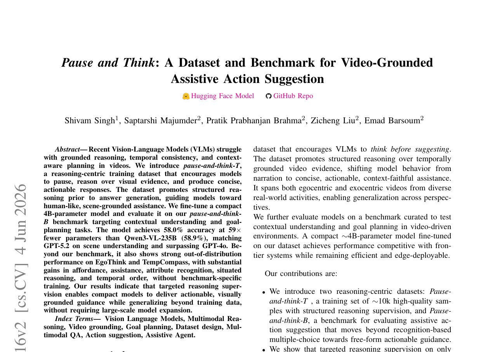

IEEE/RSJ IROS 2026
Pause and Think: A Dataset and Benchmark for Video-Grounded Assistive Action Suggestion
Recent Vision-Language Models struggle with grounded reasoning, temporal consistency, and context-aware planning in videos. We introduce Pause-and-Think-T, a reasoning-centric training dataset that encourages models to pause, reason over visual evidence, and produce concise, actionable responses. A compact 4B-parameter model fine-tuned on our dataset achieves 58.0% accuracy at 59× fewer parameters than Qwen3-VL-235B, matching GPT-5.2 on scene understanding while remaining suitable for real-time edge deployment on AMD Ryzen AI hardware.